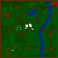
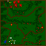
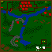
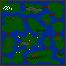
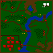
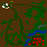

| Tekst ten pochodzi z czasopisma PC GAMER PL, z numerów 2,3,4/96. Numery poszczególnych misji w tej solucji są identyczne jak w przypadku mojej. Powinno to Wam ułatwić skorzystanie z obydwu opisów, porównanie proponowanych taktyk i wybranie tej lepszej. |
| Gra jest całkowicie polska. Jej podobieństwo do blizzardowskiego Warcrafta jest nieprzypadkowe, autorzy bowiem stwierdzili, że jak się wzorować, to na najlepszych. |
|
Tomasz Jarzębowski |
| PORADNIK TAKTYCZNY - Podstawą rozwoju w Polanach jest produkcja mleka, dlatego na ten aspekt musisz zwrócić szczególną uwagę. Są misje, w których wystarczą dwie obory (6 krów), jednak najlepiej mieć około czterech, co spokojnie zagwarantuje nam rozbudowę społeczeństwa. - Podczas ataku wroga, krowy uciekają do obory, dlatego potem musisz je skierować do ponownej pracy. Czasami też jedno ze zwierząt może zablokować dostęp do obory, miej więc na uwadze miejsce, w którym stawiasz budynek. - Trawa zjadana przez krowy odrasta po jakimś czasie. Nie będziesz miał więc kłopotów z produkcją mleka. - Staraj się szybko budować palisadę. Unikniesz w ten sposób najazdów nieprzyjaciół. Komputer bowiem nie wpada na pomysł, aby burzyć mury. - Gdy dysponujesz już paroma postaciami, staraj się je ustwaiać w szyku. Może to być np. dwuszereg. Miejsca z przodu powinny być zarezerwowane dla żołnierzy z tarczą (rycerz, woje) lub drwala, z tyłu zaś ustaw łuczników i wojów z dzidami. - Czarownik dysponuje potężną mocą. Kilku w grupie może nieźle narozrabiać. Uważaj, jak prowadzisz atak. Mag ma tendencję do samowolnego podejmowania decyzji i miota ogniem na wszystkie strony. Często z opłakanym skutkiem, gdyż zabija swoich współkamratów. - Podczas ataku na wioskę wroga, skoncentruj się na zburzeniu chat wojska. Gdy to zrobisz, ustanie szkolenie żołnierzy i spokojnie dokończysz swego dzieła. - W lasach możesz spotkać niedźwiedzia. Jest bardzo groźny i silny. Potrafi sam załatwić pięciu ludzi. Może się też zdarzyć, że uda Ci się go oswoić - zyskujesz naprawdę solidnego kompana. - Lecz swych ludzi tak często jak to możliwe. Po co szastać ich życiem nadaremno? - Jeżeli po paru dniach rodzice zaczną na Ciebie dziwnie patrzeć, dziewczyna powie, że coś jest z Tobą nie halo, a chomik jakoś nadzwyczajnie schudnie, to będzie oznaczało, że za sprawą Polan zapomniałeś o Bożym świecie. Zjawisko normalne. |
| BUDYNKI - BUDYNEK GŁÓWNY - dzięki niemu możesz wybudować drogę, oborę, chatę drwali i myśliwych oraz chatę magów. Nie zamieszkany. - OBORA - jest miejscem wychowu trzech krów. Zwierzęta oddają też do niej mleko. - CHATA DRWALI I MYŚLIWYCH - zamieszkana przez te postacie. W sumie może się ich pomieścić sześć. Gdy masz dużo mleka, dzięki tej chacie istnieje możliwość budowania chaty wojów. - CHATA WOJÓW - żyje w niej czterech ludków, możesz też budować palisadę i chatę rycerza. - CHATA RYCERZA - jest Twoim szczytowym osiągnięciem w dziedzinie budynków militarnych. Zamieszkuje ją tylko jeden osobnik. - CHATA MAGÓW - zamieszkiwana jest przez panienki i staruszków - razem 3 sztuki. |
| POSTACIE - DRWAL - zajmuje się ścinaniem suchych drzew oraz naprawą i budową domów, palisady. W wojsku można go traktować jako mięso armatnie - zawsze w pierwszym szeregu. - MYŚLIWY - nie ma zbyt dużo pracy, dlatego wykorzystuj go w walce na odległość. - WOJ Z MIECZEM - no ten to się zna na rzeczy, specjalnie szkolony, wytrzymały i chętny do wojaczki. Stawiaj na niego. - WOJ Z DZIDĄ - precyzyjny morderca. Kilku może nieźle namieszać, szczególni gdy są chronieni przez swych kumpli z tarczami. - RYCERZ - nie wymaga rekomendacji. Prawdziwy master of disaster, he-man, jednak niezwykle kosztowny. Ma doświadczenie, które z uczestnictwem w kolejnych bitwach wzrasta. - STRZYGA-KAPŁANKA - ma czar gromobicia i coś w rodzaju pola siłowego - jest odporna na ciosy. Jednak do czasu. Jako postać posługująca się magią, traci swoje właściwości na jakiś czas. - KAPŁAN-MAG - oprócz umiejętności dalekowidzenia, ma dar rzucania ognia na znaczne odległości. Niezwykle zabójczy, jednak czasem nie potrafi okiełznać swych możliwości. |
| SOLUCJA |
|
| MISJA 1 Dysponujesz oddziałem zbrojnym w sile 7 ludzi. Zgrupuj ich i czym prędzej udaj się przez most na wszchód. Tam, niedaleko jest Twoja wioska, niestety jakaś banda właśnie ją plądruje. Bez problemu dasz sobie z nimi radę. Twoim kolejnym zadaniem jest naprawienie zniszczeń w osadzie. Chętnie zrobią to drwale. Gdy skończą pracę, stwórz w oborze krowę. Zacznie jeść trawę i oddawać mleko. Z czasem spraw jej dodatkowo dwie towarzyszki - ona i ty będziecie zadowoleni. Twoim zadaniem jest odnaleźć wszystkich wrogów i wybić ich w pień. Gdy to zrobisz - musisz rozbudować wioskę do siedmiu budynków. Zostaw pracujące krowy i udaj się na poszukiwanie nieprzyjaciół. Jedna grupa znajduje się w prawym dolnym rogu mapy, a druga w lewym dolnym. Po zabiciu ich udaj się na północ. Będziesz musiał przejść przez wąską kładkę. Nidaleko tego miejsca jest świątynia - podlecz swoich ludzi. Idź na wschód, będzie tam wejście do wioski. Pilnuje jej dość silny oddział. Możesz stworzyć w swojej wiosce dodatkowych wojowników. Gdy już zniszczysz nieprzyjacielską osadę, wróć do domu i pamiętaj o stworzeniu jeszcze paru budynków. |  |
| MISJA 2 W tej misji będziesz musiał trochę pospacerować, gdyż osada wrogów jest położona daleko stąd. Rozpczynasz mniej więcej po środku mapy, a wszystkie drogi są zablokowane przez rosnące na nich drzewa. Będziez musiał je wykarczować - skieruj do tego zadania drwala. Jedynymi dostępnymi ścieżkami będą tylko te w lesie. Żadne skróty nie wchodzą w rachubę. Udaj się na północ, a następnie na południe. Po drodze spotkasz niewielkie grupki nieprzyjaciół i nie sprawią Ci raczej problemów. Znów idź do góry mapy, a potem na dół. Na drodze pojawią się drzewa, po prostu je usuń. Za następnym zakrętem jest świątynia, więc w miarę potrzeb ulecz swych ludzi. Wioska nieprzyjaciół znajduje się południowym-wschodzie. Gdy już ją zniszczysz, wróć do punktu wyjścia. Skieruj teraz wojaków na wschód. Wykarczuj lasek i idź w prawy górny róg. Wykończ wrogów. Ostatnich niedobitków znajdziesz w południowo-wschodnim rogu mapy. Nie pozwól im uciec! |  |
| MISJA 3 Twoja wioska jest oddzielona od reszty świata dwoma mostami na zachodzie. Tylko stamtąd może nadejść niebezpieczeństwo. Sporadycznie będziesz nawiedzany przez wrogów, jednak dasz sobie z nimi radę. Stwórz krowę, a gdy będziesz miał wystarczająco dużo mleka - dwie następne. Zaraz po tym wybuduj drugą oborę. Gdy będziesz miał już 6 krów, pozwól im pracować, a sam zajmij się rozbudową armii. Niestety, jedynym dostępnym budynkiem będzie tylko chata drwali i myśliwych. Teraz musisz być cierpliwy. Stwórz około 20 ludzi i udaj się przez most. Niedaleko znajduje się grupa worgów. Przeprowadź wojsko w prawy górny róg mapy. Znajdziesz tam strałkę ułozoną z kamieni. W okolicznych lasach są wrogowie - odnajdź ich i zniszcz. Teraz wystarczy iść w północno -wschodni róg mapy, by znaleźć wioskę przeciwników. Obróć wszystko w perzynę! |  |
| MISJA 4 Niezbyt fortunnie Twoja wioska usytuowana została pośrodku mapy. Nie martw się jednak. Zrób, co każę, a wszystko będzie w porządku. Zacznij od wyhodowania trzech łaciatych (sorry - wszystkie krowy są brązowe). Po lewej stronie znajduje się świątynia - będziesz zmuszony do jej częstego odwiedzania, gdyż co rusz, ktoś będzie Cię nachodził, a to z północy, a to z południa. Spoko, dasz sobie z nimi radę. W miarę możliwości (czyt. jak najszybciej) zbuduj infrastrukturę militarną i powołaj do życia paru drwali i myśliwych. Uczyli się innego fachu, lecz chętnie przeżyją jakąs ciekawą przygodę. Przeprowadź ich przez jeden ze wschodnich mostów, tam spotkasz nieprzyjaciół. Daj im do zrozumienia, że nie są tu mile widziani. Na północy znajdziesz wioskę - chyba wiesz, co masz robić! |  |
| MISJA 5 Oj, to będzie bardzo żmudna misja. Zanim wybudujesz armię minie trochę czasu. Ale zacznijmy wszystko od początku. Stwórz jedną krowę i następnie wybuduj chatę drwali i myśliwych. Musisz działać szybko. Następnym budynkiem musi być chata wojów. Posiadanie tego budynku wiąże się z możliwością budowy palisady - bardzo ważnego czynnika ekonomicznego. Postaw ją więc czym prędzej na mostach i w wąskim przesmyku na północy. No, to masz już problem z głowy. Teraz wystarczy tylko budować armię i ruszać na wroga! Gdyby było Ci trochę ciasno na tym terenie, stwórz magów i wypal lasek, będzie od razu inaczej. Siedziba wrogów znajduje się na południowo-zachodnim krańcu mapy. Udaj się tam, przejdź przez mostek i zaraz za nim, po prawej stronie znajdziesz "szałasy" tych szubrawców. Puść je z dymem! |  |
| MISJA 6 Od północy zostałeś ograniczony górami. Postaraj się, jak najszybciej zbudować palisadę. Nie będzie to jednak proste. Zaatakuje Cię oddział wrogów. Pozwól im niszczyć Twoje budynki, a tymczasem każ swoim myśliwym ostrzeliwać napastników z krótkiej odległości. Powinieneś dać sobie radę z nimi. Teraz daj czadu i stwórz palisadkę. Gdy będziesz już ją miał - wystarczy tylko stworzyć silną armię. Postaw na wojów i magów - będziesz z nich na pewno zadowolony. Musisz udać się na północ. Znajduje się tam świątynia, której strzegą kapłani i żołnierze - wybij ich do nogi. Przejdź przez mostek i skieruj się na zachód, ażdojdziesz do ścieżki. Następnie, idąc ścieżką, udaj się w przeciwnym kierunku. Znajdziesz tam chatkę, którą Twój niesamowity oddział zmiecie z powierzchni ziemi. Jeśli Ci tego mało, udaj się na południe, tam będziesz miał nieco więcej pracy. Przeprowadź eksmisję miejscowej ludności, a jako kierunek docelowy wybierz dla nich niebo. Jako że się ściemnia, rozpal sobie ognisko. Chałupki się świetnie do tego nadają. To nie koniec zabawy. Trochę dalej na północ jest świątynia, której strzeże strażnik. Jest on ostatnim świadectwem obcej działalności na tych terenach. |  |
| MISJA 7 Twoja wioska znajduje się na wysepce. Zabezpiecz wojskiem wszystkie mosty. Utrzymuj ten stan przez jakiś czas. Nastąpią ataki ze strony nieprzyjaciela, dlatego musisz się odpowiednio przygotować. Stwórz tylko jedną krowę i postaw chatę drwali oraz myśliwych. Produkuj wojsko, tak dużo, byś odparł najazdy złoczyńców. Następnie przydałyby się dwie dodatkowe krowy, a po nich na miejsce zabitych - nowi żołnierze. Druga obora pomoże Ci na nieco szybszy rozwój - zbuduj też chatę wojów. Gdy będziesz posiadał już w miarę sporo ludzi, pomyśl o trzeciej oborze i jej inwentarzu - to wiele ułatwi. Tak się akurat składa, że legowisko nieprzyjaciela znajduje się na podobnej wyspie, jak Twoja, tylko że w północno-zachodnim rogu mapy. Dobądź miecza, zwołaj ekipę i z okrzykiem: Krwi! rusz na tych badziewiarzy. Jedno jest pewne - nie mają żadnych szans! |  |
| MISJA 8 Twoja wioska jest otoczona wodą i górami. W zasadzie jedynym możliwym kierunkiem ataku wrogów jest południe. Musisz wybudować palisadę, gdyż tylko ona uchroni Cię przed najazdami. Możesz od razu stworzyć trzy krowy - niech pracują na maxa. Niezbędna oczywiście jest też chata drwali i myśliwych. Zaraz po niej postaw chatę wojów i zmiejsca zacznij budować mur. Następnie według własnego uznania twórz armię. Musi być znaczna - tak około 25 ludzi. Wyrusz na poszukiwania wrogów. Kryją się w okolicznych lasach, dlatego musisz sprawdzić wszystkie te tereny. Gdy w zastępach leśnych zostanie jedynie zwierzyna, otrzymasz coś specjalnego. Udaj się na północ - tak mniej więcej pośrodku mapy znajduje się wioska nieprzyjaciół. Choć jest nieźle chroniona, pod Twoim naporem na pewno się ugnie! |  |
| MISJA 9 To zadanie różni się nieco od poprzednich. Kierujesz grupą specjalną, której zadaniem jest odbić z rąk nieprzyjaciela Twoją kapłankę Widorę. Mag i kilku wojów powinno dać sobie radę, pamiętaj jednak, żeby ich leczyć po każdej wygranej potyczce. W ten sposób unikniesz strat i będziesz miał więcej szans na zwycięstwo. Udaj się na wschód. W lasach kryją się wrogowie. Następnie kieruj się tuż przy prawej krawędzi mapy na północ. Tu napotkasz nieco większy opór, z racji tego, że nieprzyjaciel ma w swych szeregach magów i kapłanki. Po zwycięstwie skieruj się wzdłuż ścieżki na zachód. Spenetruj okoliczne lasy i wybij znajdujących się w nich wrogów. Twoim miejscem docelowym jest północ. Tam mieści się wioska, dość dobrza strzeżona i tam też więżą Twoją kapłankę. Zniszcz wszystkich mieszkańców oraz domy i uwolnij kobietę. Pod Twoją ochroną musi dotrzeć do miejsca docelowgo. Gdy wejdzie na tajemny symbol, MISJA skończy się. |  |
| MISJA 10 Tym razem masz dokonać czegoś niezwykłego. Musisz eskortować nie byle kogo - krowę, która od dziesięciu misji na Ciebie pracuje. Jako że zwierzak musi dotrzeć na coroczne święto, musisz wykazać się nie lada umiejętnościami. A w zasadzie, to nawet nie. Można wszystkich znakomicie oszukać i dostać się we wskazane miejsce. Udaj się na południe i przejdź między górami na wschód. Po drodze napotkasz dwa lekko zbrojne oddziały - nie sprawią Ci kłopotów. Niedaleko jest miejsce spotkania. Wprowadź krowę na tajemny znak. Jest już bezpieczna. |  |
| MISJA 11 Zaczynasz w prawym dolnym rogu mapy. Niestety, masz bardzo mało miejsca na stawianie jakichkolwiek budynków, ale jakoś damy sobie radę. Szybko stwórz 3 krowy, a następnie tak szybko, jak to tylko możliwe, chatę drwali i myśliwych. Nie twórz wojska, szkoda na razie mleka. Wybuduj chatę wojów i zacznij stawiać palisadę w miejscu nieco na zachód, gdzie jest niewielka przestrzeń pomiędzy lasem i górami. Przy budowaniu może Cię zaskoczyć wróg, ale to tylko jeden jego wybryk. Udaj się też szybko drwalami na zachód, aż do końca mapy. Podejdź też nieco na północ. Zobaczysz, jak góry zwężają się nieco. Postaw tam palisadę - zyskasz sporo terenu i możesz zacząć myśleć o armii. Rozbuduj ją jak najlepiej. Postaw szczególnie na wojów, rycerzy (około 30) i magów (12 będzie w sam raz). Wróg trochę zmienił się i też pomyślał o murze, a poza tym stworzył naprawdę silną armię. Wyrusz na północ. Mniej więcej pośrodku mapy znajduje się wioska. Sporo tam będzie roboty, ale żołnierze uporają się z przybłędami. W nagrodę niech na ogniu z palących się domów upieką sobie kiełbaski. Należało im się, no nie? |  |
| MISJA 12 Znów tradycyjnie domostwo otacza akwen wody, a ściślej mówiąc rzeka. Tradycyjnie stwórz szybko trzy krowy, a następnie chaty drwali i myśliwych oraz wojów. Nieco powyżej teren zwęża się, jest to dogodne miejsce na palisadę. Masz dużo miejsca, buduj, więc co chcesz i twórz silną armię. Gdy postawisz cztery obory, to przypływ mleka będzie natychmiastowy. Kilkunastu wojów w pełni wystarczy Ci w najeździe na wroga. Skieruj ludzi na północ (będzie tam paru gości do zniszczenia) następnie na zachód, a potem na południe. Dotrzesz do siedliska nieprzyjaciela. Niewiele zdążyli stworzyć. Dlatego radość z plądrowania osady będzie niewielka. |  |
| MISJA 13 W tej misji Twoim zadaniem jest uwolnić kapłankę z rąk nieprzyjaciela. Zadanie jest o tyle ciekawe, że nie poruszasz się po tradycyjnych terenach, lecz po kilkunastu wyspach połączonych ze sobą mostami. Zaczynasz w lewym górnym rogu mapy, dysponując oddziałem wojowników i jednym niedźwiedziem. Udaj się na wschód przez most. Usytuowany jest on na górze mapy. Nie wybieraj drogi poniżej, gdyż czają się tam dwa niedźwiedzie i łatwo mógłbyś stracić kilku wojów. Posuwając się do przodu, nie możesz zapominać o tyłach. Co jakiś czas podążać będą za tobą wrogowie, ale nie powinni sprawiać dużego kłopotu. Idź na południe, na sam dół mapy. Na małej wysepce jest uwięziona za drzewami strzyga. Niech czarownik ją zabije. Obok, po prawej stronie, jest spora wyspa. Przejdź przez nią i skieruj się na północ, a następnie na wschód. Tam, na małej wysepce, dwóch czarowników więzi Twoją kapłankę. Zabij strażników i uwolnij niewiastę. Zaprowadź ją w miejsce oznaczone tajemnym symbolem. Jest już bezpieczna. |  |
| MISJA 14 To zadanie nie jest trudne. Posiadając dwa oddziały zbrojnych, na pewno dasz sobie radę. Musisz spenetrować cały teren i wyrżnąć w pień wszystkich znajdujących się tam wrogów. Większość chowa się po lasach, kilu napotkasz też, gdy będziesz sprawdzał obszary leśne. Na północy znajduje się niewielki przyczółek, którego chroni kilku wrogów. Dostęp do nich jest utrudniony ze względu na obecność palisady. Jednak czarownik poradzi sobie z tym fantem. Każ mu spalić mur i zaatakuj znajdujących się za nim żołnierzy. To już koniec roboty! |  |
| MISJA 15 Zaczyna się tradycyjnie. Masz niewielką wioskę, musisz ją rozbudować, stworzyć armię i zaatakować wroga. Stwórz czym prędzej trzy krowy - niech zabierają się od razu do pracy. Jeśli będziesz dysponował wystarczającą ilością mleka, wybuduj chatę drwali, a następnie chatę wojów i jak najprędzej palisadę. Jeżeli Ci się uda, powinieneś zdążyć przed atakiem. Staraj się teraz rozbudowywać armię i osadę wedlw własnego uznania. Wróg może sporadycznie nachodzić Cię, jednak po jakimś czasie będzie rezygnował. Przesuwaj też palisadę, jeżeli stwierdzisz że dysponujesz zbyt małą ilością miejsca. Chcąc atakować wroga, udaj się na wschód, a następnie na południe do mostu i dalej w dół mapy. Jest tam wioska, lecz nie atakuj jej jeszcze. Wyślij oddział, omijając siedlisko nieprzyjaciół, w lewy dolny róg mapy. Będzie tam most - przekrocz go, a zobaczysz więzionego swojego czarownika. Odbij go. Teraz możesz spokojnie wyruszyć i splądrować wioskę wroga. Mała informacja: trzeba uratowć czarownika przed zniszczeniem osady, gdyż jeżeli postąpimy odwrotnie, to nieprzyjaciel kapnie się o co chodzi i po prostu zabije więźnia. A to niestety oznacza naszą porażkę. |  |
| MISJA 16 Zadanie jest podobne do tego z misji 15. Nie będziemy jednak nikogo ratowali, ale zwyczajnie budowali armię i najeżdżali wroga. Zacznij od stworzenia od razu trzech krów. W miarę możliwości postaw chatę drwali i myśliwych, a potem wojów i oczywiście stwórz palisadę. Gdy będziesz już bezpieczny, wybuduj drugą oborę. Teraz nastaw się na jak najlepszą rozbudowę armii, a gdy będziesz już dysponował w pełni zadowalającym Cię oddziałem, wyrusz na północno-wschodni kraniec mapy. Jest tam wioska, której zniszczenie nie zajmie Ci dużo czasu. To jednak nie koniec, gdyż dokładnie po przeciwległej stronie, w lewym dolnym rogu, znajduje się druga osada. Nie ma możliwości, by stwaiała Ci jakikolwiek opór! |  |
| MISJA 17 Musisz działać szybko, gdyż w przeciwnym razie przyjdzie banda opryszków i Cię załatwi. Ale spoko, oto co masz robić. Stwórz trzy krowy, a następnie szybko chatę drwali i myśliwych oraz domek woja. Podczas budowy ktoś zaatakuje Twoje włości, pozwól by niszczył jeden z Twoich budynków, a tymczasem każ drwalowi, by naprawiał tę zniszczoną chatę, a łucznikowi by strzelał do wroga z daleka. To zdaje egzamin. Gdy będziesz miał wystarczająco dużo mleka, stawiaj czym prędzej palisadę jak najbliżej swojej wioski (by zaoszczędzić czas i materiał). Gdy zobaczysz, że nadciągają wojska nieprzyjaciół, będziesz już bezpieczny. Oni po pewnym czasie odejdą (zgłodnieli czy co?), a ty będziesz mógł przesunąć mur nieco dalej. Postaw go najlepiej na moście na południu i przy jeziorku na zachodzie. Zyskasz naprawdę sporo terenu. Teraz pozostaje Ci tworzenia wojska. Gdy to zrobisz, możesz zaatakować wioskę wroga, znajdującą się w lewym dolnym rogu mapy. Może się okazać, że mimo obrócenia w perzynę ich domostwa, nie ukończyłeś misji. Rozwiązanie jest proste - część niedobitków chowa się po okolicznych lasach. Znajdź ich i wykończ! |  |
| MISJA 18 Bierzesz udział w dość ciekawej akcji. Po całej mapie rozrzucone zostały Twoje oddziały. Jedne są silniejsze, drugie nieco słabsze, jednak ich ilość pozwala na pomyślne zakończenie tego zadania. Możesz dążyć do połączenia się oddziałów, wtedy będziesz dysponował o wiele potężniejszą jednostką. Nieważne, którą grupą żołnierzy ruszysz, i tak w okolicy napotkasz kryjących się wrogów. Największe ich skupisko jest w centrum mapy i na północy (natabene obok jednej Twojej ekipy). Penetrując tereny na zachodzie, natkniesz się na świątynię, która w tym przypadku jest miejscem przemiany. Z każdego Twojego wojownika możesz uczynić niedźwiedzia (niezłe, no nie?), a wiadomo jaką dysponuje on siłą. Kilka takich zwierzaków bez problemu upora się z przyjaciółmi, kryjącymi się w okolicznych lasach. |  |
| MISJA 19 Znów typowa misja, gdzie musisz nastawić się na rozbudowę wioski i armii. Pośrodku mapy znajduje się główny budynek - jedyna budowla, jaką aktualnie posiadasz. Postaw jak najprędzej oborę i stwórz trzy krowy. Następnie buduj to co zwykle - chatę drwali i myśliwych, chatę wojów i palisadę. Jako że od zachodu i południa oddzielony jesteś wodą, dostęp do Ciebie jest tylko od wschodu. Jednak najlepiej byłoby, gdybyś zbudował mur na dwóch mostach. Oto ich lokalizacja: jeden jest na północy, mniej więcej na wysokości wioski, a drugi na południu, nieco na wschód. Musisz działać bardzo szybko, gdyż może się zdarzyć, że wrogowie zaatakują, gdy będziesz na to najmniej przygotowany. Posiadając palisadę możesz być spokojny o własny byt. Rozbudowuj wioskę i stwórz silną armię. Do zniszczenia są trzy wioski. Jedna znajduje się w lewym górnym rogu mapy, druga nieco poniżej, a żeby się dostać do trzeciej, musisz udać się na południe. Nie będziesz miał żadnych problemów ze zniszczeniem tych siedlisk, gdyż jak sam się przekonasz, są wyjątkowo kiepsko chronione. |  |
| MISJA 20 Czeka Cię wiele pracy i problemów. Teren, na którym będziesz stawiać osadę należy do wyjątkowo nieurodzajnych. Mała ilość trawy sprawia, że krowy nie mają co jeść, ale jest na to rada. Twoja wioska znajduje się w północno-zachodnim rogu mapy. Wyślij więc dwóch drwali na wschód. Będą tam większe połacie trawy. Wybuduj oborę i stwórz krowę. Gdy będziesz miał możliwość, postaraj się także o kolejne krowy. Będą sobie pracowały, a Ty w tym czasie wybuduj w miejscu swej wioski chatę drwali i myśliwych oraz, jak się uda, chatę wojów. Teraz nastąpi atak nieprzyjaciela. Napadnie na Ciebie grupa zbrojnych, której niestety nie można się postawić. Jeżeli będziesz miał szczęście, to najadą samotnie stojącą oborę. Jeżeli nie będziesz miał szczęścia, to wróg po prostu rozniesie Twą osadę na strzępy. W pierwszym przypadku zginą niestety wszystkie krowy, ale powinieneś mieć tyle mleka, żeby wybudować wokół domostwa palisadę. Zdążysz prawie na styk. Gdy wróg podejdzie w Twoje okolice, będziesz bezpieczny. Niestety, nadal dysponujesz małą ilością łąk, ale taki już jest los. Stwórz krowę w swojej starej oborze - niech pożywia się tym co jest. Dąż do poszerzenia swych włości. Staraj się przesuwać palisadę jak najdalej na wschód, aż do końca mapy. Gdy to zrobisz, pozostanie już tylko stawianie budynków i tworzenie armii. Wiadomo, że im więcej żołnierzy, tym lepiej, ale w tym przypadku nie potrzbujesz potężnego oddziału. Wystarczy kilku wojów. Wioska znajduje się w południowo-wschodnim rogu mapy. Z jej zniszczeniem nie będziesz miał żadnych problemów. |  |
| MISJA 21 Przed Tobą ciekawe zadanie. Musisz uratować starego przyjaciela, Helwiga Wikinga, z rąk nieprzyjaciół i odstawić go w bezpieczne miejsce. Helwig więziony jest niedaleko Twojego oddziału. Przesuń oddział na wschód, a tam zobaczysz kilka drzew, za którymi jest więzień. Kapłanem spal te drzewa, ale uważaj byś nie naruszył Wikinga. Gdy dołączy do Twojej ekipy, będziesz mógł zaatakować wioskę, która znajduje się tuż obok. Potem wykończ też drugą osadę, którą znajdziesz nieco na południe. To jeszcze nie wszystko. W lasach na zachodzie kryją się jeszcze jacyś przyjaciele. Pozbądź się ich, niech nie zaśmiecają Twojego państwa. Uporawszy się z tym, skieruj swe kroki na północ, w kierunku morza. Odkrywany przez Ciebie teren będzie niczym innym, jak półwyspem helskim. Na jego końcu jest tajemne miejsce, do którego msui dotrzeć Wiking. Chyba wiesz, co masz robić! |  |
| MISJA 22 Jest to dość trudna misja. Zacznij od postawienia obory i stworzenia trzech krów. Następnie tak szybko jak tylko możesz, zbuduj chatę drwali i myśliwych oraz stwórz łucznika. Poślij te postacie nieco na północ i usytuuj je obok gór. Będą nachodzić Cię wrogowie i niestety zabiją Twych żołnierzy, jednak nie zaatakują wioski. Niech krowy pracują, a Ty tymczasem powołaj do życia drwala, a potem koplejne postacie. Staraj się także wybudować chatę wojów. Pamiętaj, aby wojsko wystawiać dalej na północy, wtedy wróg nie podejdzie pod osadę. Powinieneś otoczyć wioskę palisadą. Najlepsza jej lokalizacja będzie pomiędzy górami, a morzem. Będąc bezpieczny za murem, chyba wiesz co należy robić. Twórz wojsko, jak najwięcej wojów, a także oddział czarowników, najlepiej nie więcej niż dziewięciu. Będąc odpowiednio wyposażony, możesz wyruszyć na nieprzyjaciela. Na północnym zachodzie jest most, a zaraz za nim mały oddział wroga. Zostawisz za sobą las usłany. Skieruj się na południe, w lewy dolny róg mapy. Jest tam wioska, której zrównanie z powierzchnią ziemi nie sprawi Ci problemów. |  |
| MISJA 23 Okazuje się, że jeden z Twych magów, Dvarhk Oldrin - mistrz czarnej magii, musi dotrzeć do wyznaczonego celu. Jego ochroną musisz zająć się właśnie Ty. Droga nie jest bardzo skomplikowana, niemniej jednak czai się na niej niebezpieczeństwo. Skieruj się na wschód, a następnie na północ i przejdź przez most. Teraz trzeba udać się na południe, gdzie koczuje spory oddział wroga. Walka będzie ciężka, nie obejdzie się też bez strat własnych, ale w końcu wyjdziesz zwycięsko z tej potyczki. Nie ma jednak czasu na odpoczynek - musisz wyruszyć na zachód i tam stoczyć walkę. Jak się wkrótce przekonasz, nie będzie to ostatnia konfrontacja. Na północy czeka na Ciebie następna brygada, a gdy ją pokonasz, to jesteśmy już w domu. Niedaleko znajduje się świątynia, która jest miejscem docelowym. Odprowadź tam Dvarhka i możesz już świętować. |  |
| MISJA 24 Dysponujesz sporym oddziałem żołnierzy, ale jak sam się przekonasz, Twoje szeregi szybko się przerzadzą. Zadanie jest teoretycznie proste, trzeba wybić wszystko co się rusza. W praktyce wygląda to nieco gorzej, ale jakoś damy sobie radę. Gdy tylko rozpoczniesz misję, zaatakuje Cię wróg, ale spoko, nie ma problemu. Jako że okolice pełne są nieprzyjaciół, musisz uważać. Udaj się drogą na wschód, do samego końca mapy. Po środku, za drzewami, jest miejsce premiany. Możesz tam zmienić paru wojów w niedźwiedzie oraz podleczyć tych o wątłym zdrowiu. Musisz umiejętnie gospodarować swoją grupą, gdyż przed tobą jeszcze wiele roboty. Przede wszystkim zaatakuj wioskę, która znajduje się na południu. Strzegą jej czarownicy i woje, ale powinieneś dać sobie radę. Gdy kogoś zbijesz, sprawdzaj stan zdrowia własnych ludzi i lecz ich jak najczęściej. Druga osada jest na zachodzie. Dostaniesz się do niej przez wąski przesmyk lądu. Jest słabo chroniona, dlatego zajmie Ci mało czasu. W okolicznych czasach znajdują się wrogowie. Pamiętaj, że jest ich sporo i są niebezpieczni. Ostatni nieprzyjaciela znajduje się w prawym, górnym rogu mapy. Raczej nie będziesz miał tam problemu. Zwróć uwagę, że co jakiś czas nachodzi Cię jakiś pojedynczy wojownik. Z reguły pokazuje się na zachodzie i będzie to robił póki nie ukończysz misji. Przypominam o częstym leczeniu własnych oddziałów oraz o cyklicznym zapisywaniu stanu gry. Przydaje się. |  |
| MISJA 25 Twoim ostatnim zadaniem jest eskortowanie Dvarhka Oldrina w kolejne bezpieczne miejsce. Poruszasz się wąwozami, ale może się zdarzyć, że droga wiedzie przez góry. Udaj się na wschód, a następnie na północ. Po drodze znajdziesz świątynię, w której uleczysz własnych niedobitków. W zasadzie droga sama będzie Cię wiodła, więc nie powinno być problemu. Na swej drodze drodze napotkasz sporo wrogów. Czasem będzie to zwykły wojownik, a na samym końcu, na północnym wschodzie, czekać na Ciebie będzie kilka niedźwiedzi. Konfrontacja ta niekoniecznie musi przebiegać po Twojej myśli, dlatego proponuję ominąć tę przeszkodę. Jest to możliwe, jeśli udasz się północnym szlakiem za górami. Potem wystarczy już zejść nieco w dół. Tam, pośrodku mapy jest miejsce, do którego należy wprowadzić Oldrina. I w zasadzie to już koniec, ale nie oczekuj fanfar i oklasków. Niczego takiego nie będzie. |  |
| KONIEC |